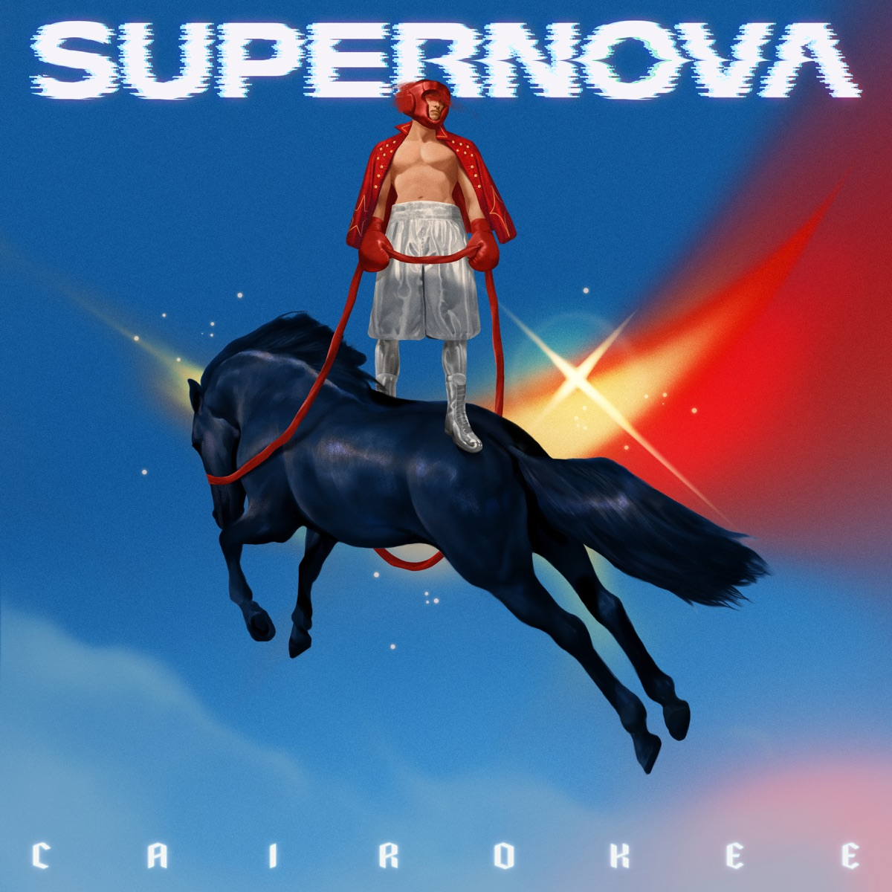

ديسمبر ٢٠١٨. ساقية الصاوي. الصالة مليانة عن آخرها، والفرقة على المسرح، والجمهور بدأ يهتف.December 2018. El Sawy Culturewheel. The hall packed to the last seat, the band on stage, and the crowd beginning to chant.
عايزين «ديناصور». عايزين «السكة شمال».We want “Dinosaur.” We want “The Road Is Wrong.”
الهتاف بيعلا. والخمسة واقفين ساكتين. مامدّوش إيديهم على الآلات. غنّوا حاجة تانية.The chanting rises. And the five stand silent. Their hands never reach for the instruments. They sing something else.
مش لأنهم نسيوا — الأغاني دي هما اللي كاتبينها. لكن اللي مسموح بيه على النت مش بالضرورة مسموح بيه على مسرح، والحفلة الجاية معلّقة على السكوت ده.Not because they had forgotten — they wrote those songs themselves. But what is permitted online is not necessarily permitted on a stage, and the next concert hangs on this very silence.
خمس رجالة بيغنّوا لجمهور بيطلب منهم أغانيهم، وهما مش قادرين يدّوهاله.Five men singing to a crowd that is asking them for their own songs — and they cannot give them.
النجم في الفضاء بيعدّي بالحالة دي بالظبط قبل ما ينفجر: الضغط بيزيد من بره، والجاذبية بتسحقه من جوّه، وهو ساكت — لحد ما الوقود يخلص. ساعتها بيحصل انفجار بيبقى من أسطع الأجسام اللي عين الإنسان شافتها، وبيبعتر طبقاته في الفضاء. الحديد اللي في دمك، والكالسيوم اللي في عضمك — الاتنين خرجوا من انفجار من النوع ده.A star in space passes through exactly this state before it explodes: the pressure mounts from outside, gravity crushes it from within, and it stays silent — until the fuel runs out. Then comes an explosion that becomes one of the brightest objects the human eye has ever seen, scattering its layers across space. The iron in your blood and the calcium in your bones both came out of an explosion of this kind.
اسمه العلمي: سوبر نوفا.Its scientific name: supernova.
وبعد المشهد ده بتمن سنين، طلع الاسم ده مكتوب على غلاف ألبوم. وجوّاه أغنية عنوانها تحذير من كلمتين: «حاسب حاسب».And eight years after that scene, this name appeared written on an album cover. And inside it, a song whose title is a two-word warning: “Hasib Hasib” — careful, careful.

عشان نفهم الانفجار، لازم نرجع للنجم وهو لسه بيتكوّن.To understand the explosion, we have to go back to the star while it was still forming.
خمس عيال وكافيه فاضيFive Kids and an Empty Café
سنة ٢٠٠٣. المعادي. مجموعة أصدقاء من الطفولة، اتربّوا على الروك الأجنبي وألعاب الفيديو والإنترنت وهو لسه بيدخل البيوت المصرية بالعافية.2003. Maadi. A group of childhood friends, raised on foreign rock, video games, and the internet as it was still forcing its way into Egyptian homes.
البداية كانت أمير عيد وشريف الهواري، والباقيين انضمّوا واحد ورا التاني: تامر هاشم على الدرامز، وشريف مصطفى على الكيبورد، وآدم الألفي على الباص. وأول ما بدأوا كانوا بيغنّوا بالإنجليزي تحت اسم The Black Star، لحد ما قرروا حاجة تانية خالص: نغنّي بلغتنا إحنا.It began with Amir Eid and Sherif El Hawary, and the rest joined one after another: Tamer Hashem on drums, Sherif Mostafa on keyboards, Adam El Alfy on bass. When they first started they sang in English under the name The Black Star — until they decided something else entirely: we will sing in our own language.
الاسم الجديد طلع من دمج كلمتين: Cairo + Karaoke. كايروكي. القاهرة وهي بتغنّي عن نفسها.The new name came from fusing two words: Cairo + Karaoke. Cairokee. Cairo singing about itself.
طب كانوا بيعملوا إيه في السنين اللي قبل ما حد يعرفهم؟So what were they doing in all those years before anyone knew them?
أمير عيد نفسه حكاها بعد سنين وهو بيتفرّج على صورة قديمة: كانوا بيغنّوا أسبوعيًا في كافيهات صغيرة، يقعدوا بالساعات، يجرّبوا يعزفوا نفس الأغنية بشكل مختلف كل مرة، وممكن يكون «المكان كله فيه خمس أشخاص بس». وقال جملة تانية أهم: مكانش فيه حاجة يخافوا منها أو عليها.Amir Eid himself told the story years later, looking at an old photograph: they played weekly in small cafés, sat for hours, tried playing the same song differently every time, and sometimes “the whole place had maybe five people in it.” Then he said a second sentence, the more important one: there was nothing to be afraid of, and nothing to fear for.
ودي مش تفصيلة رومانسية عن البدايات. دي أهم معلومة في الحكاية كلها.And that is not a romantic detail about beginnings. It is the single most important piece of information in this whole story.
مهندس الصوت علاء الكاشف، اللي اشتغل معاهم أكتر من عشر سنين، قال في مقابلة تليفزيونية إنه شاف فيهم جدية في اختيار الموضوعات مش طبيعية في عيال عندهم ١٧ سنة. ووصفهم بإنهم فريق بيشتغل على الفكرة الطالعة من جوّاه، بغضّ النظر عن الناس هتستقبلها إزاي.The sound engineer Alaa El Kashef, who worked with them for over ten years, said in a television interview that he saw in them a seriousness in choosing their subjects that was not normal for seventeen-year-old kids. He described them as a band that works on the idea coming from within — regardless of how people will receive it.
خمس أشخاص في الجمهور. صفر ضغط. وفكرة مش معروضة للتصويت.Five people in the audience. Zero pressure. And an idea that was never up for a vote.
وبعد تلات وعشرين سنة، هيبقى فيه أغنية في ألبومهم اسمها «أنا فاضل». والكلمة في المصري بتشيل معنيين على بعض: اللي فاضل من حاجة كانت أكبر، واللي مش مشغول بحاجة. الاتنين كانوا صح في الكافيه ده.And twenty-three years later, there would be a song on their album called “Ana Fadel.” In Egyptian Arabic the word carries two meanings at once: what remains of something that was once bigger — and someone with nothing occupying him. In that café, both were true.
الأغنية اللي سبقت التنحّي بيومThe Song That Preceded the Stepping-Down by One Day
يناير ٢٠١١.January 2011.
بعد تمن سنين من الغنا في القاعات الصغيرة، طلعت «صوت الحرية» بمشاركة هاني عادل — مصوّرة من جوّه ميدان التحرير، بوشوش الناس اللي كانت واقفة هناك فعلًا. نزلت قبل تنحّي مبارك بيوم واحد.After eight years of singing in small halls, out came “Sout El Horeya” — “The Voice of Freedom” — with Hany Adel, filmed inside Tahrir Square itself, with the faces of the people who were actually standing there. It was released one day before Mubarak stepped down.
وبعدها «يا الميدان» مع عايدة الأيوبي، والحنين للميدان لسه طازة. و«اثبت مكانك» مع زاب ثروت، والناس بدأت تتعب. و«مطلوب زعيم» وهي بتحطّ مواصفات الزعيم اللي البلد مستنياه، والانتخابات على الأبواب.Then “Ya El Midan” with Aida El Ayoubi, while the longing for the Square was still fresh. Then “Esbat Makanak” — “Hold Your Ground” — with Zap Tharwat, as people began to tire. Then “Matloob Za'eem” — “Leader Wanted” — laying out the specifications of the leader the country was waiting for, with elections at the door.
السؤال اللي أغلب الناس بتجاوب عليه غلط: ليه نجحت كايروكي في ٢٠١١؟Here is the question most people answer wrong: why did Cairokee succeed in 2011?
الإجابة السهلة إن الثورة عملتلهم دعاية. الإجابة الحقيقية أعقد من كده: هما كانوا الوحيدين الجاهزين. تمن سنين وهما بيبنوا لغة وصوت وطريقة كلام مالهاش علاقة بالمصنع الغنائي المصري. وفي اللحظة اللي البلد احتاجت فيها تسمع نفسها، كانوا هما الميكروفون الوحيد المضبوط على التردد ده.The easy answer is that the revolution gave them publicity. The real answer is more complicated: they were the only ones who were ready. Eight years spent building a language, a sound, a way of speaking that had nothing to do with the Egyptian song factory. And at the moment the country needed to hear itself, they were the only microphone tuned to that frequency.
المصادفة مابتصنعش صوت. المصادفة بتكشف الصوت اللي كان موجود أصلًا.Coincidence does not create a voice. Coincidence reveals the voice that was already there.
بس الميدان ده نفسه هو اللي هيتحوّل لتهمة بعد شوية.But that very Square is what would soon be turned into an accusation.
الفاتورةThe Bill
في ٢٠١٢، قرر وزير الإعلام وقتها أحمد أنيس منع إذاعة «مطلوب زعيم» بحجة خدش الحياء العام — بسبب لفظ واحد: «دكر». لفظ بيتقال في الشارع المصري خمسميت مرة في اليوم.In 2012, the information minister of the time, Ahmed Anis, banned “Leader Wanted” from the airwaves on the grounds of public indecency — because of a single word: “dakar,” male. A word said in the Egyptian street five hundred times a day.
في عهد الإخوان اتقالوا عليهم كفرة. وبعد كده اتقالوا عليهم عملاء وخونة. نفس الناس، نفس الأغاني، تهمتين متناقضتين. ولما التهمتين بيتناقضوا والمتهم واحد، غالبًا المشكلة مش فيه — المشكلة في اللي بيتّهم.Under the Brotherhood they were called infidels. Later they were called agents and traitors. Same people, same songs, two contradictory charges. And when the two charges contradict each other while the accused is one and the same, the problem is usually not in him — it is in whoever is doing the accusing.
سنة ٢٠١٦ نزلت «آخر أغنية»، تضامنًا بعد ما اتنكّل بعدد من أصدقائهم — منهم باسم يوسف وماهينور المصري وأحمد دومة. الرقابة رفضتها، فنزّلوها على يوتيوب.In 2016 came “Akher Oghneya” — “The Last Song” — in solidarity, after a number of their friends had been persecuted, among them Bassem Youssef, Mahienour El-Massry, and Ahmed Douma. The censors rejected it, so they put it on YouTube.
و٢ يوليو ٢٠١٧، رفضت الهيئة العامة للرقابة على المصنفات الفنية أغاني من ألبوم «نقطة بيضا»، وحظرت تداوله في الأسواق، وأوصت بعدم إذاعته في الراديو والتليفزيون. الفريق نزّل بيان قال فيه إن الخبر الوحش إن ألبومهم لأول مرة مش هينزل الأسواق بشكله الحقيقي — والخبر الحلو إنهم مكمّلين. وحطّوه كله مصوّر على النت. ببلاش.And on July 2, 2017, the state censorship authority rejected songs from the album “Noaata Beida” — “A White Point” — banned its distribution in the markets, and recommended it not be broadcast on radio or television. The band published a statement: the bad news is that, for the first time, our album will not reach the markets in its true form — the good news is that we are continuing. And they put the whole of it, filmed, on the internet. For free.
وماوقفتش عند كده. حفلات اتلغت «لدواعٍ أمنية». وحفلة في الإسماعيلية اتعدى فيها مجهولون على الفريق وجمهوره بالضرب.It did not stop there. Concerts were canceled “for security reasons.” And at one concert in Ismailia, unknown men assaulted the band and its audience with beatings.
أمير عيد وصف اللي بيحصل بإنه «اغتيال معنوي»، وقال إن الأجهزة ماطلبتش منهم مباشرة إنهم مايغنّوش — بس محدش بيذيع أغانيهم، وهما أساسًا مش عايزين.Amir Eid described what was happening as a “moral assassination,” and said the agencies never directly asked them not to sing — it is simply that no one broadcasts their songs, and they, at this point, no longer want them to.
ونرجع لمشهد الساقية اللي فتحنا بيه: الجمهور بيهتف، والخمسة ساكتين.And we return to the scene at El Sawy that we opened with: the crowd chanting, and the five silent.
عشان الحرية مش قرار بتاخده مرة واحدة. دي فاتورة بتيجي كل شهر.Because freedom is not a decision you make once. It is a bill that arrives every month.
والنجم تحت الضغط مابينطفيش. بيسخن.And a star under pressure does not go out. It gets hotter.
الجيل اللي مكانش ليه أغانيThe Generation That Had No Songs
راجع من شغله الساعة تسعة بالليل، واقف في ميكروباص، ودنه فيها سماعة.Coming home from work at nine at night, standing in a microbus, an earphone in his ear.
الراديو بيقوله إن الحب حلو. التليفزيون بيقوله إن البلد بخير. الشيخ بيقوله إن الدنيا فانية.The radio tells him love is sweet. The television tells him the country is fine. The sheikh tells him this world is fleeting.
تلات أصوات، ولا صوت واحد فيهم بيتكلم عن التلات ساعات اللي هو عايشها دلوقتي دي.Three voices — and not one of them speaks about the three hours he is living through right now.
أمير عيد اتسأل مرة: ليه الناس اتعلّقت بيكم؟ وردّه كان تشخيص أدقّ من دراسة: المحتوى الفني في المنطقة العربية بيتلخّص في تلات أنواع — رومانسي، ووطني، وديني — وكلها بتعتمد على شكل المطرب أكتر ما بتعبّر عن الواقع، لحد ما قطاع من الشباب «كفر» بيها.Amir Eid was once asked: why did people grow so attached to you? His reply was a diagnosis more precise than any study: artistic content in the Arab region comes down to three genres — romantic, patriotic, and religious — all of them depending on the singer's looks more than expressing any reality, until a whole segment of the young simply lost their faith in it.
يعني جيل كامل عنده أغنية عن الحب، وأغنية عن الوطن، وأغنية عن الجنة. ومافيش أغنية عن صباح يوم تلات.Meaning: an entire generation had a song about love, a song about the homeland, and a song about paradise. And no song about a Tuesday morning.
مافيش أغنية عن راجل عنده ٢٦ سنة بيدفع نص مرتبه إيجار. ولا عن الخوف من التليفون وهو بيرن. ولا عن حد حاسس إنه اتأخّر على حياته.No song about a man of twenty-six paying half his salary in rent. None about the fear of the phone as it rings. None about someone who feels he has arrived late to his own life.
الجيل ده مكانش ناقصه أغاني. كان ناقصه مراية.This generation was not missing songs. It was missing a mirror.
وهي دي الوظيفة اللي كايروكي اشتغلتها من غير ما تعلن عنها: مش إنهم يقولوا للناس تعمل إيه، لكن إنهم يوروا الناس شكلها. وبعد خمستاشر سنة، هيبقى فيه أغنية في الألبوم اسمها «١٠٠٠ مراية». وواحدة زي دي مش بتتكتب إلا في اللحظة اللي المراية الواحدة تبقى مش كفاية — لما تلاقي نفسك في كل حتة بشكل مختلف.And that is the job Cairokee performed without ever announcing it: not telling people what to do, but showing people what they look like. Fifteen years later, there would be a song on the album called “1000 Mirrors.” And a song like that is only ever written at the moment when one mirror is no longer enough — when you find yourself everywhere, each time in a different shape.
التجريب ابن الحريةExperiment, Child of Freedom
وعشان تفضل حية، الفرقة جرّبت. عملت مزيج بين الروك والشعبي: «غريب في بلاد غريبة» مع عبد الباسط حمودة، و«الكيف» مع طارق الشيخ. النقاد اتخضّوا — واحد من النقاد الموسيقيين وصف التجربة بإنها فاشلة، واتّهمهم بإنهم مش عارفين لونهم إيه، ووصف تكرار أسامي أغانيهم وألبوماتهم بإنه «إفلاس». ردّ الفريق كان بسيط: المزج ده مش خطأ. ده الهدف.And to stay alive, the band experimented. They mixed rock with shaabi: “A Stranger in Strange Lands” with Abdelbasset Hamouda, “El Keif” with Tarek El Sheikh. The critics were scandalized — one music critic called the experiment a failure, accused them of not knowing what color they were, and described the recurrence of their song and album titles as “bankruptcy.” The band's reply was simple: this blend is not a mistake. It is the point.
وفي ٢٠١٩، بعد ما ألبوم «أبناء البطة السودا» خرج فيه «كان لك معايا» — اللي اشتغل على أم كلثوم — قامت الدنيا. جمعية المؤلفين والملحنين اتقدّمت ببلاغ ضد الفريق، وشرطة المصنفات اتقدّمت ببلاغ تاني: أصدروا ألبوم من غير تصريح مسبق.And in 2019, when the album “Sons of the Black Duck” came out carrying “Kan Lak Ma'aya” — the track that worked on Umm Kulthum — all hell broke loose. The composers' and authors' society filed a complaint against the band, and the artistic-works police filed a second one: they had released an album without prior authorization.
يعني الحاجة اللي جابتلهم الأزمة هي بالظبط الحاجة اللي بتحدد قيمتهم: إنهم بيجرّبوا.Which means: the very thing that brought them the crisis is precisely the thing that defines their worth — that they experiment.
والتجريب مش موهبة. التجريب ابن الحرية.And experimentation is not a talent. Experimentation is the child of freedom.
اللي حطّ عبد الباسط حمودة جنب جيتار كهربا أول مرة كان عارف إن نص الناس هتقول عليه باع، والنص التاني هيقول عليه بيتمسخر. وعمله برضه. عشان اللي حر من جوّاه، السلطة الوحيدة اللي فوق دماغه هي فكرته.Whoever first put Abdelbasset Hamouda next to an electric guitar knew that half the people would say he had sold out, and the other half would say he was clowning. He did it anyway. Because for the one who is free on the inside, the only authority above his head is his own idea.
وساعتها الحقيقة مابتبقاش حاجة بندوّر عليها لحد ما نمسكها — بتبقى حاجة بنصنعها. تقول اللي إنت مؤمن بيه وكل الناس ضدك؟ تبقى صادق. والصدق بيعمل واقع ماكانش موجود قبله.And at that point truth stops being something we search for until we catch it — it becomes something we make. You say what you believe while everyone is against you? Then you are truthful. And truthfulness creates a reality that did not exist before it.
الحقيقة بنت الشجاعة.Truth is the daughter of courage.
أربع سنين سكوتFour Years of Silence
آخر ألبوم كامل كان «روما» سنة ٢٠٢٢. وبعده سكوت طويل، وتأجيلات ورا تأجيلات.The last full album was “Roma,” in 2022. After it, a long silence, and postponement after postponement.
والسبب مكانش مزاج ولا خلاف. في السنين دي الفريق كان بيدفن أهله: أمير عيد فقد والدته أواخر ٢٠٢٥، وشريف الهواري فقد والده.And the reason was neither mood nor dispute. In those years the band was burying its own: Amir Eid lost his mother in late 2025, and Sherif El Hawary lost his father.
الراجل اللي غنّى للبلد وهي بتتغير، قعد أربع سنين يتفرّج على حياته هي اللي بتتغير.The man who sang for a country as it changed spent four years watching his own life change instead.
وفي الفترة دي بالذات بتتكتب أغاني بعناوين زي «وحدي» و«مت ليه». العنوان الأول حالة، والتاني سؤال مالوش إجابة. والغريب إن الاتنين مش من كلام أمير: «وحدي» كتبها محمد شافعي، و«مت ليه» كتبها ميدو زهير. يعني الفرقة، وهي في أضعف لحظاتها، فتحت الباب لناس تانية تقول عنها اللي هي مش قادرة تقوله.And it is in exactly this period that songs get written with titles like “Wahdi” — “Alone” — and “Mot Leh” — “Why Did You Die.” The first title is a state; the second is a question with no answer. The strange thing is that neither is in Amir's own words: “Wahdi” was written by Mohamed Shafei, and “Mot Leh” by Mido Zoheir. Meaning: the band, at its weakest moment, opened the door for others to say on its behalf what it could not say itself.
وفي نفس الفترة حصلت حاجة غريبة: الفرقة اللي كانت مرفوضة في الإذاعة بقت تملا صالات بره مصر. جولة أوروبية بدأت من باريس في مارس ٢٠٢٦، وحفلات في عمّان ودبي، وقدامهم حفلتين في الساحل والعلمين الشهر ده، وأول حفل ليهم في بغداد في ديسمبر.And in the same period something strange happened: the band rejected by state radio began filling halls outside Egypt. A European tour opened in Paris in March 2026, concerts in Amman and Dubai, two shows ahead of them on the North Coast and in El Alamein this month, and their first-ever concert in Baghdad this December.
الدولة تقدر تمنعك من الراديو. مش قادرة تمنع عشرين ألف واحد إنهم يحفظوا كلامك بالنص.The state can keep you off the radio. It cannot keep twenty thousand people from knowing your words by heart.
تسعة بالليلNine at Night
٣ أغسطس ٢٠٢٦. الساعة تسعة بالظبط، طلع «سوبر نوفا».August 3, 2026. At nine o'clock exactly, “Supernova” came out.
مش كليب، ولا أغنية، ولا حتى ألبوم بالشكل اللي إحنا متعوّدين عليه.Not a music video, not a single, not even an album in the form we are used to.
الفريق نزّله في صورة سهرة تليفزيونية مدتها حوالي ٣٧ دقيقة: الإعلامي محمود سعد قاعد بيحاورهم، وبين السؤال والسؤال بتيجي الأغاني — برؤية إبداعية لمحمود عزب، وأجواء بتستدعي القاهرة زمان: قهوة، وتليفزيون قديم، وزمن كان المذيع فيه بيقعد مع الفنان ويسأله سؤال حقيقي.The band released it as a televised evening of about 37 minutes: the broadcaster Mahmoud Saad sitting with them in conversation, and between one question and the next, the songs arrive — with the creative vision of Mahmoud Azab, and an atmosphere summoning old Cairo: a café, an old television set, and an era when the host would sit with the artist and ask a real question.
وقف ثانية عند القرار ده.Pause for a second at that decision.
إحنا في زمن الأغنية بتتقطّع لخمستاشر ثانية على تيك توك، وزمن السينجلز اللي بتنزل كل تلات أسابيع عشان الخوارزمية ماتنساكش. وفي الزمن ده بالذات، فرقة بتطلب من الناس ٣٧ دقيقة كاملة من انتباهها.We live in the era of the song chopped into fifteen seconds on TikTok, the era of singles dropped every three weeks so the algorithm does not forget you. And in this era, of all eras, a band asks people for 37 full minutes of their attention.
ده مش حنين. ده رهان — على إن الناس لسه عايزة قصة، مش بس نغمة.That is not nostalgia. That is a bet — that people still want a story, not just a tune.
الألبوم فيه: «نسينا»، و«وحدي»، و«في الختام»، و«أنا فاضل»، و«١٠٠٠ مراية»، و«مت ليه»، و«حاسب حاسب»، و«أنا بكبر»، و«ما تيجي». الكتابة اتوزّعت بين أمير عيد ومصطفى إبراهيم وميدو زهير ومحمد شافعي وحازم ويفي، والإنتاج الموسيقي معظمه لشريف مصطفى، و«في الختام» اتسجّلت مع أوركسترا بودابست سكورينج.The album holds: “Neseena,” “Wahdi,” “Fel Khetam,” “Ana Fadel,” “1000 Mirrors,” “Mot Leh,” “Hasib Hasib,” “Ana Bakbar,” and “Ma Tigi.” The writing was shared among Amir Eid, Mostafa Ibrahim, Mido Zoheir, Mohamed Shafei, and Hazem Wefy; most of the musical production is Sherif Mostafa's; and “Fel Khetam” was recorded with the Budapest Scoring Orchestra.
والصوت نفسه أهدى من اللي فات: جيتارات أقل خشونة، ومساحات فاضية أكتر، وأوركسترا كامل بياخد مكان الصخب في «في الختام». اللي كان بيتقال بصريخ سنة ٢٠١١، بيتقال دلوقتي بنَفَس واطي.And the sound itself is quieter than what came before: guitars less rough, more empty space, and a full orchestra taking the place of the noise in “Fel Khetam.” What was said by screaming in 2011 is said now in a low breath.
ومحمود سعد سأل أمير عن معنى الاسم، فجه الرد مراوغ بشكل جميل: «عجبني شكل الكلمة أكتر» — من غير ما يقول إن ليها معنى محدد.Mahmoud Saad asked Amir what the name meant, and the answer came back beautifully evasive: “I just liked the shape of the word” — without ever saying it had a fixed meaning.
بيقول إن الكلمة ملهاش معنى. والكلمة نفسها اسم أضخم انفجار رصده الإنسان في الكون.He says the word has no meaning. And the word itself is the name of the most enormous explosion humankind has ever observed in the universe.
بصّ لأسامي الأغاني على بعض: نسينا. وحدي. أنا بكبر. مت ليه. في الختام.Look at the song titles side by side: We Forgot. Alone. I Am Growing Old. Why Did You Die. In Closing.
الجيل اللي غنّى سنة ٢٠١١ عن الحرية، بيغنّي في ٢٠٢٦ عن الوقت.The generation that sang about freedom in 2011 sings about time in 2026.
ودي مش ردّة. دي المرحلة الطبيعية في حياة أي حد صادق: بتبدأ بالغضب على العالم، وبتنتهي بالحساب مع نفسك. اللي عنده ٢٥ بيسأل: مين المسؤول؟ اللي عنده ٤٠ بيسأل: أنا رحت فين؟And that is not a retreat. It is the natural stage in the life of anyone honest: you begin with rage at the world, and you end with a reckoning with yourself. At twenty-five the question is: who is responsible? At forty the question is: where did I go?
قصيدة اتقالت على منصة اسمها نجمA Poem Spoken on a Stage Named Negm
في نص الألبوم فيه أغنية اسمها «أنا بكبر»، كلمات الشاعر مصطفى إبراهيم.In the middle of the album sits a song called “Ana Bakbar” — “I Am Growing Old” — with lyrics by the poet Mostafa Ibrahim.
وحكايتها أقدم من الألبوم بكتير.And its story is far older than the album.
«أنا بكبر» أصلها قصيدة عامية لمصطفى إبراهيم، موجودة من سنين، ونشرها بصوته هو قبل ما ييجي على بال حد إنها تتغنّى. وسنة ٢٠٢٠ وقف يلقيها في حفل توزيع جائزة أحمد فؤاد نجم لشعر العامية — وهو الفائز بالجائزة.“Ana Bakbar” began as a colloquial poem by Mostafa Ibrahim, in existence for years, published in his own voice before it occurred to anyone that it might be sung. And in 2020 he stood to recite it at the ceremony of the Ahmed Fouad Negm Prize for colloquial poetry — as the winner of the prize.
خد بالك من اللي حصل هنا.Pay attention to what happened here.
شاعر عامية واقف على منصة اسمها «نجم»، بيقول قصيدة عن إنه بيكبر. وبعدها بست سنين، الفرقة اللي طلعت من ميدان التحرير بتاخد القصيدة دي وتغنّيها — بعد أربع سنين قضتها في الجنازات والتأجيل.A colloquial poet standing on a stage named “Negm” — a name that also means “star” — reciting a poem about growing old. And six years later, the band that came out of Tahrir Square takes that poem and sings it — after four years spent between funerals and postponements.
فيه فرق كبير بين «كبرنا» و«أنا بكبر». الأولى حكم على حاجة خلصت. التانية فعل مضارع — بيحصل دلوقتي، وإنت واقف جوّاه ومش قادر توقّفه.There is a great difference between “we grew old” and “I am growing old.” The first is a verdict on something finished. The second is present tense — happening now, while you stand inside it, unable to stop it.
والعنوان ده لوحده هو خلاصة الألبوم: مافيش حد بيعلن نهاية حاجة. الناس بس بتلاحظ إنها بتتغير، وهي مالهاش حيلة.And that title alone is the album's summation: no one is announcing the end of anything. People are simply noticing that they are changing — and that they are helpless before it.
الأغنية اتصدّرت التريند زيها زي باقي الألبوم. والفريق اللي كان ممنوع من إذاعة الدولة سنة ٢٠١٧، بقى ألبومه سنة ٢٠٢٦ بيتشكر من واحد من أكبر صنّاع الترفيه في المنطقة — تركي آل الشيخ كتب بوست بالمصري بيقول فيه إن الشباب دول موهوبين ومش شبه حد.The song topped the trends, like the rest of the album. And the band banned from state radio in 2017 finds its 2026 album praised by one of the region's biggest entertainment magnates — Turki Al-Sheikh wrote a post in Egyptian Arabic saying these young men are gifted, and like no one else.
مش واضح ده انتصار مين بالظبط.It is not clear exactly whose victory that is.
الأغاني اللي بتشتغل بعد تلاتين سنةThe Songs That Work Thirty Years Later
سنة ٢٠٠٦ كان فيه مسلسل اسمه «حضرة المتهم أبي»، بطولة نور الشريف. التتر كتبه أحمد فؤاد نجم، ولحّنه ياسر عبد الرحمن، وغنّاه مدحت صالح: أغنية أب بيتكلم مع ابنه بعد ما اتكسر قدام ناس أقوى منه.In 2006 there was a television series called “The Accused: My Father,” starring Nour El Sherif. Its theme song was written by Ahmed Fouad Negm, composed by Yasser Abdelrahman, and sung by Medhat Saleh: the song of a father speaking to his son after being broken before men stronger than himself.
الأغنية كانت بتعدّي على الشاشات كل يوم في رمضان، والناس بتعيّط، ومحدش قال إنها خطر.The song passed across the screens every day in Ramadan, and people wept, and no one said it was dangerous.
بعدها بخمس سنين، نزل الناس الشارع.Five years later, the people went down into the street.
الفن السياسي مابيشتغلش زي مفتاح النور. بيشتغل زي المياه الجوفية. أغاني منير وهاني شنودة وعبد الرحيم منصور وسيد حجاب وعمار الشريعي ونجم ماكانتش بتصنع ثورة — كانت بتصنع أذن. أذن قادرة تسمع كلمة زي «حرية» وتفهمها بجسمها، مش بدماغها بس. والأذن دي بتاخد جيل كامل عشان تتكوّن.Political art does not work like a light switch. It works like groundwater. The songs of Mounir, Hany Shenouda, Abdelrahim Mansour, Sayed Hegab, Ammar El Sherei, and Negm were not manufacturing a revolution — they were manufacturing an ear. An ear capable of hearing a word like “freedom” and understanding it with the body, not the mind alone. And that ear takes an entire generation to form.
ونجم مات سنة ٢٠١٣. وبعد سبع سنين، جائزة باسمه بتدّي شاعر شاب قصيدته عن الكِبَر. وبعد ست سنين تانيين، القصيدة دي بتوصل لودن كل واحد في مصر عنده تليفون.Negm died in 2013. Seven years later, a prize bearing his name honored a young poet for his poem about growing old. And six years after that, the poem reached the ear of everyone in Egypt with a phone.
اللي بيتزرع النهارده مش هيطلع النهارده.What is planted today does not sprout today.
والفرقة اللي سكتت على مسرح الساقية سنة ٢٠١٨ مش هي نفسها اللي بتملا صالات بره سنة ٢٠٢٦ بالصدفة. الطاقة اللي اتضغطت في السنين دي مراحتش. اتخزّنت.And it is no coincidence that the band that fell silent on the El Sawy stage in 2018 is the same band filling halls abroad in 2026. The energy compressed in those years did not vanish. It was stored.
وفاضل مشهد واحد صغير من أول الحكاية:And one small scene remains, from the very beginning of the story:
خمس شباب في كافيه في المعادي، بيعزفوا الأغنية الواحدة بتلات طرق مختلفة عشان بس يبسطوا نفسهم، قدام خمس أشخاص. محدش بيصوّرهم، ولا فيه رقابة تمنعهم، ولا حد فاكر إن الحكاية دي هتوصل لحاجة.Five young men in a café in Maadi, playing the same song three different ways just to please themselves, in front of five people. No one filming them, no censor to stop them, no one imagining this story would ever amount to anything.
كانوا أحرار عشان محدش كان واخد باله منهم.They were free because no one was paying them any attention.
والانفجار — زي أي سوبر نوفا في الكون — ماجاش من قوة النجم. جه من إنه فضل شغّال لحد ما خلص كل اللي عنده.And the explosion — like any supernova in the universe — did not come from the star's strength. It came from the star staying at work until it had spent everything it had.
في الختام… ياريت ماتقولش سلام.In closing… please, don't say goodbye.
الضغط اللي بيتخزّن جوّانا مابيروحش لوحده — في Life Ark بنتعلم نفتحله طريق قبل ما ينفجرThe pressure stored inside us does not leave on its own — at Life Ark we learn to open it a road before it explodes
لو الحكاية دي لمست جوّاك حاجة — سنين السكوت، أو الفاتورة اللي بتيجي كل شهر، أو سؤال «أنا رحت فين؟» — فده بالظبط الكلام اللي بنفتحه في جلسات العلاج وفي «في الصالة»: بنسمّي اللي جوّانا بدقة، وبنتعلم نشيله من غير ما يكسرنا.If something in this story touched something in you — the years of silence, the bill that arrives every month, or the question “where did I go?” — that is exactly what we open up in therapy and in “Fel Sala”: we name what is inside us precisely, and we learn to carry it without being broken by it.